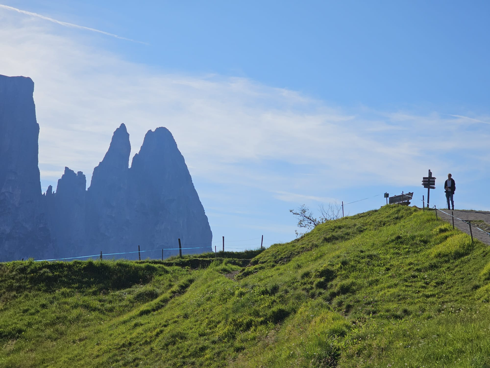

About Me
- 2025 – 2026— Part III Mathematics, University of Cambridge
- 2021 – 2025— BSc Physics, Heidelberg University
Welcome to my little corner of the internet!
I'm Lorenz Hartmann, a theoretical physics student and Part III Mathematics graduate currently based in Cambridge (UK), trying to make sense of the world one equation at a time.

But I promise, I am interested in many other things as well! One of my favourite hobbies seems to be acquiring new hobbies, so no matter what you're into, chances are we will have some interest in common.
This website is a work in progress - I will do my best to add new content regularly and keep it up to date. Right now, you can:
- Learn more about my attempt to code a bot that can beat me at chess, and find out how you can play against this bot online
- Discover the most exciting and beautiful places I have travelled to
- Download and play a fun geography quiz I designed
- Get in touch with me and follow me on social media
Feel free to explore, and if anything catches your interest, let's connect!